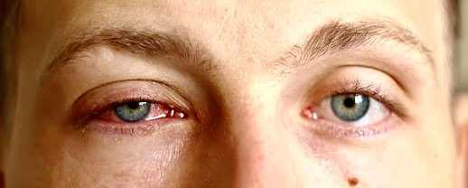
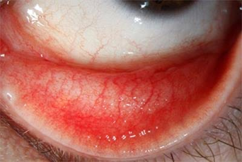
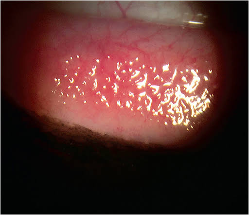

University Institute of Pharmacy
Pt. Ravishankar Shukla University, Raipur, (C.G.)
Title:- Reviewing Conjunctivitis: A brief Exploration of Causes, Diagnosis, and Therapeutic Approaches"
Guided By :-
Prof. AMBER VYAS Sir
Submitted To:- Submitted By:- Saurabh Rathore Prof. Manju Singh rawat Rahul Dewangan Shailesh Mandke Shubhra Khaiwart Ashinta Tirkey
( B.Pharm, 7th Sem )
KEY WORDS
.Viral conjunctivitis
.Pink eye
.Conjunctivitis symptoms
.Infectious conjunctivitis
.Adenoviral conjunctivitis
.Highly contagious eye infection
.Red eye
.Eye discharge
.Viral eye infection
.Eye pain and discomfort
.Epidemic keratoconjunctivitis (EKC)
.Eye infection treatment
.Home remedies for pink eye
INTRODUCTION
Viral conjunctivitis, colloquially appertained to as" pink eye," is a common and largely contagious eye condition that affects millions of originalities worldwide. This condition, characterized by inflammation of the conjunctiva, not only poses discomfort and visual torture to those tormented but also raises enterprises about its rapid-fire spread within communities and institutional settings. Viral Conjunctivitis reckoned. The etiology of viral conjunctivitis is generally associated with several viral agents, with adenoviruses being the most frequent lawbreakers. still, herpes simplex contagion(HSV), enteroviruse that can also induce analogous clinical instantiations. It characteristics included, greenish Ness, blood vessels discharge, pain and photophobia. Feting the viral etiology is vital for accurate opinion and effective operation. Clinical donation serves as the hallmark of viral conjunctivitis, with affected originalities passing a diapason of distressing symptoms. These include conjunctival greenish Ness, giving the eye its characteristic pink appearance, inordinate tearing, optical discharge(frequently purulent or watery), and sensations of foreign body or grit. The intensity and duration of these symptoms can vary, impacting diurnal conditioning and overall quality of life. Diagnosing viral conjunctivitis entails a comprehensive evaluation that combines clinical assessment and, when warranted, laboratory tests. Reported shows that 80 above of all acute cases are diagnosed by non ophthalmologist include family drug croaker
Nanny medical practictioners. Ensuring an accurate opinion is essential as it guides applicable treatment strategies. Laboratory tests may encompass viral societies, polymerase chain response( PCR) assays, or serological tests to confirm the specific viral agent responsible for the infection. Approx the person of case of this acute conjunctivitis give critical and primary care. Around 50 to 75 cases of conjunctivitis in children are set up in which are alternate most common cases of it. Viral conjunctivitis is largely contagious and can spread fluently through direct contact with infected optical concealment or defiled shells. Accordingly, infection control and forestalment strategies are of consummate significance, particularly in collaborative settings like seminaries, healthcare installations, and homes. applying robust public health measures, similar as scrupulous hand hygiene, proper disposal of pains, and adherence to insulation preventives, plays a vital part in abridging the spread of the infection.

Historical Background
Naturally, a patient's medical history and physical examination are crucial for diagnosing conjunctivitis, identifying its etiology, and designing a course of treatment. When taking the patient's ocular history, it's important to keep in mind the following: the type of discharge, presence of pain, itching, features of the eyelids, periorbital involvement, changes in vision, photophobia, and corneal opacity; timing of onset; prodromal symptoms; unilateral or bilateral eye involvement; associated symptoms; prior treatment and response; and past episodes.
Visual acuity, extraocular motility, visual fields, discharge type, pupil shape, size, and response, corneal opacity, foreign body assessment, tonometry, and swelling of the eyelids should all be examined during the ocular examination. When conjunctivitis occurs, the conjunctiva typically becomes diffusely red. It encompasses the full surface of the conjunctiva, including the tarsal and bulbar conjunctiva. This helps rule out more serious disorders such angle-closure glaucoma, keratitis, and iritis, which only affect the bulbar conjunctiva. Consider a different diagnosis of foreign body, pterygium, or episcleritis if the redness is limited.
The type of discharge is a crucial aspect in identifying the cause of conjunctivitis, following redness. Purulent discharge—which returns to its original form as soon as it is removed from the eye—or mucopurulent discharge—which is often thicker and adheres to the lashes—are commonly linked to bacterial conjunctivitis. N gonorrhoeae usually presents more acutely than other forms of bacterial conjunctivitis, with abundant purulent discharge, sudden onset, and rapid progression. Both viral and allergic conjunctivitis typically have a watery discharge. The additional discovery of preauricular lymphadenopathy in the context of watery discharge can suggest a viral diagnosis rather than an allergic reaction to conjunctivitis.
Like redness and discharge, a lot of other frequent conjunctivitis signs and symptoms are ambiguous, which might complicate figuring out what the underlying cause is. For instance, there is a historical correlation between itching and allergic conjunctivitis. This is probably true when there is a history of atopy and watery discharge, but according to one study, 58% of patients with bacterial conjunctivitis that was culture-positive also had itchy eyes.
In contrast, papillae are an indeterminate finding in cases of conjunctivitis. Both viral and non-infectious conjunctivitis can have papallae. These are often located beneath the superior tarsal conjunctiva and are little elevations with central vessels. In cases of contact lens intolerance, allergic conjunctivitis, and bacterial conjunctivitis, papillae are frequently seen. The conjunctiva in chronic allergic conjunctivitis may seem cobblestone-like due to the papillae.
Follicles are likewise nonspecific, but when combined with other information, they can assist distinguish the cause of conjunctivitis. Follicles, sometimes referred to as the lower cul-de-sac, are tiny, raised yellow-white lesions that are located near the confluence of the palpebral and bulbar conjunctivas. A lymphocytic reaction known as follicles is frequently seen in adenoviral and chlamydial conjunctivitis.
Herpes simplex virus (HSV) can cause corneal dendritic lesions even in the absence of skin lesions, hence a fluorescein examination is recommended for patients with a history of perioral cold sores, current skin lesions, or suspected viral conjunctivitis. This examination is a crucial part of the physical evaluation since it could yield the sole information that can distinguish HSV from other viral conjunctivitis causes, which call for distinct treatment and follow-up. On the other hand, herpes zoster ophthalmicus usually manifests in patients older than 60 as a severe vesicular rash that appears after the fifth cranial nerve is distributed. Headache, fever, malaise, and photophobia are examples of prodrome symptoms. The Hutchinson sign—vesicles at the tip of the nose strongly indicates eye involvement with herpes zoster.
Even while symptoms can frequently coexist, a methodical approach, in-depth medical history, and physical examination can safely rule out any acute diseases that could endanger vision and identify conjunctivitis as the most likely cause. The following lists the traditional conclusions for the three most typical forms of conjunctivitis:
Bacterial: conjunctival papillae, morning matting of the eyes, white-yellow purulent or mucopurulent discharge, redness and a feeling of a foreign body, and rarely preauricular lymphadenopathy.
Viral symptoms include watery discharge, inferior palpebral conjunctival follicles, history of recent upper respiratory tract infection, and sensitive preauricular lymphadenopathy.
Allergy symptoms include burning or stinging, edematous eyes, conjunctival papillae, watery discharge, and the absence of preauricular lymphadenopathy.
TYPES OF CONJUNCTIVITIS
Viral conjunctivitis:
The Presentation, Cause, and Epidemiology Up to 80% of cases of acute conjunctivitis are caused by viruses. When compared to laboratory confirmation, the clinical accuracy rate for diagnosing viral conjunctivitis is less than 50%. Many cases are incorrectly diagnosed as conjunctivitis caused by bacteria.
Adenoviruses cause between 65% and 90% of episodes of viral conjunctivitis, and they induce two of the most prevalent clinical entities associated with viral conjunctivitis, pharyngoconjunctival fever and epidemic keratoconjunctivitis. Pharyngoconjunctival fever is distinguished by the sudden onset of high fever, pharyngitis, and bilateral conjunctivitis, as well as periauricular lymph node enlargement, whereas epidemic keratoconjunctivitis is more severe and is characterized by watery discharge, hyperemia, chemosis, and ipsilateral lymphadenopathy. Lymphadenopathy is seen in up to 50% of instances of viral conjunctivitis and is more common in viral conjunctivitis than in bacterial conjunctivitis.

Adenoviruses cause between 65% and 90% of phases of viral conjunctivitis, and they induce two of the most prevalent clinical entities associated with viral conjunctivitis, pharyngoconjunctival fever and epidemic keratoconjunctivitis. Pharyngoconjunctival fever is distinguished by the sudden onset of high fever, pharyngitis, and bilateral conjunctivitis, as well as periauricular lymph node enlargement, whereas epidemic keratoconjunctivitis is more severe and is characterized by watery discharge, hyperemia, chemosis, and ipsilateral lymphadenopathy. Lymphadenopathy is seen in up to 50% of instances of viral conjunctivitis and is more common in viral conjunctivitis than in bacterial conjunctivitis.
Preventive and Therapeutic Measures Adenovirus-induced viral conjunctivitis is extremely contagious, with 10% to 50% chance of transmission, according to estimates. Direct contact with contaminated hands, medical equipment, swimming pool water, or personal belongings can spread the virus; in one study, 46% of infected individuals had positive cultures generated from hand swabs. Hand washing, stringent equipment disinfection, and separating sick patients from the rest of the clinic have all been recommended due to the high rates of transmission. Estimates for incubation and communicability range from five to fourteen days, respectively.
Although there is no effective treatment, artificial tears, topical antihistamines, or cold compresses may help relieve some of the symptoms. Antiviral drugs are ineffective, and topical antibiotics are not advised. Topical antibiotics may not protect against secondary infections, and their usage may complicate the clinical presentation by inducing allergy and toxicity, resulting in a delay in the detection of other potential ocular disorders. The use of antibiotic eyedrops may increase the risk of infection spreading to the other eye due to contaminated droppers. Antibiotic usage is also associated with increased resistance. Because of the risk of complications, patients should be referred to an ophthalmologist if symptoms do not disappear within 7 to 10 days.
Herpes Conjunctivitis:
Between 1.3% and 4.8% of all occurrences of acute conjunctivitis are caused by the herpes simplex virus. Virus-induced conjunctivitis is typically unilateral. There may be associated vesicular eyelid sores along with the thin, watery discharge. Antivirals, both oral and topical, are advised to slow the progression of the illness. Topical corticosteroids should be avoided as they may be harmful and can amplify the virus.
Ocular tissue may be affected by the shingles-causing herpes zoster virus, particularly if the first and second branches of the trigeminal nerve are affected. The most frequent site of ocular involvement is the eyelids (45.8%), which is followed by the conjunctiva (41.1%). In 38.2% of instances, uveitis and corneal complications may be present, respectively. Referrals for a comprehensive ocular evaluation are recommended for patients exhibiting Hutchinson sign (vesicles at the tip of the nose, which is highly correlated with corneal involvement) or probable involvement of the eyelids or eyes. Typically, topical steroids and oral antivirals are used in conjunction for treatment.
/
Bacterial Conjunctivitis:
Epidemiology, Causes, and Symptoms In one study, the prevalence of bacterial conjunctivitis was reported to be 135 per 10,000 people. Bacterial conjunctivitis can be contracted directly from infected people or through aberrant expansion of the local conjunctival flora. Common modes of transmission include contaminated fingers, oculogenital spread, and infected fomites. Furthermore, some circumstances, such as impaired tear production, disturbance of the natural epithelial barrier, adnexal abnormalities, trauma, and immunocompromised status, predispose to bacterial conjunctivitis. Staphylococcal species are the most prevalent pathogens for bacterial conjunctivitis in adults, followed by Streptococcus pneumoniae and Haemophilus influenzae. H influenzae, S pneumoniae, and Moraxella catarrhalis are frequently responsible for the sickness in youngsters. The disease's course normally lasts 7 to 10 days.
Decreased vision and a violent, copious purulent discharge are the symptoms of hyperacute bacterial conjunctivitis. Preauricular adenopathy, palpable eye discomfort, and swelling of the eyelids are frequently present. Neisseria gonorrhoeae is frequently the etiology, and there is a significant chance of corneal involvement and consequent corneal perforation. Intramuscular ceftriaxone is the recommended treatment for hyperacute conjunctivitis caused by N gonorrhoeae. It is also important to handle concurrent chlamydial infection appropriately.
Any conjunctivitis that lasts longer than four weeks is referred to as chronic bacterial conjunctivitis. Enteric bacteria, Moraxella lacunata, and Staphylococcus aureus are the most common culprits in this situation, and ophthalmologic consultation is advised for care.
Red eye, purulent or mucopurulent discharge, and chemosis are signs and symptoms. The incubation period and communicability period are predicted to be 1 to 7 days and 2 to 7 days, respectively. Bilateral eyelid mattering and adherence, absence of irritation, and no history of conjunctivitis are all excellent predictors of bacterial conjunctivitis. Gonococcal conjunctivitis should always be addressed in cases of severe purulent discharge. Conjunctivitis that does not respond to routine antibiotic therapy in sexually active patients necessitates a chlamydial examination. Contact lens wearers are at risk of developing bacterial keratitis, which should be treated with topical antibiotics and reported to an ophthalmologist. If a patient is wearing contact lenses, they should be removed immediately.
When treating bacterial conjunctivitis, using antibiotics Within one to two weeks of onset, at least 60% of suspected or culture-verified cases of acute bacterial conjunctivitis resolve on their own. Topical antibiotics shorten the course of the illness, but there is no discernible difference in the outcomes of the treatment and placebo groups. Patients who received antibiotic treatment for two to five days or for six to ten days showed a roughly 10% higher rate of clinical improvement compared to the placebo in a large meta-analysis that reviewed 3673 patients from 11 randomized clinical trials. No significant adverse events that could endanger vision were noted in any of the placebo groups. Certain extremely virulent bacteria, such S pneumoniae, N gonorrhoeae, and H influenzae, can more readily breach a host's defenses and inflict more severe harm.
For patients whose bacterial culture results are positive, topical medicines appear to be more beneficial. They were successful in raising the clinical and microbiological cure rates in the patients with culture-proven bacterial conjunctivitis, but only in improving the microbial cure rate in the patients with clinically suspected bacterial conjunctivitis, according to a large systemic review. When the frequencies of the antibiotics supplied were slightly altered, other trials did not find a significant difference in the clinical cure rate.
Antibiotic Options All broad-spectrum antibiotic eyedrops appear to be beneficial in treating bacterial conjunctivitis in general. There are no statistically significant variations in clinical cure rates among the broad-spectrum topical antibiotics. Local availability, patient allergies, resistance patterns, and cost are all factors that influence antibiotic selection. Immediate Antibiotic Therapy Alternatives To the best of our knowledge, no studies have been undertaken to assess the efficacy of ocular decongestants, topical saline, or warm compresses in the treatment of bacterial conjunctivitis. Topical steroids should be avoided since they may extend the course of the disease and exacerbate the infection.
An overview of suggested treatments for bacterial conjunctivitis To sum up, the advantages of receiving antibiotics include a speedier recovery, a reduction in transmissibility, and an early return to school. In addition, there are no side effects in cases of simple bacterial conjunctivitis when antibiotics are not administered. Therefore, in cases with simple conjunctivitis, waiting it out, treating right away, and not treating at all seem like viable options. In patients with purulent or mucopurulent conjunctivitis, as well as those who wear contact lenses, have weakened immune systems, have noticeable discomfort, and have a suspicion of chlamydial or gonococcal conjunctivitis, antibiotic therapy should be taken into consideration.
Bacterial Conjunctivitis:
Conjunctivitis Caused by Methicillin-Resistant S aureus Methicillin-resistant S aureus conjunctivitis is thought to be the cause of 3% to 64% of ocular staphylococcal infections; the organisms causing this ailment are resistant to numerous medications, and the disorder is growing more widespread. Patients who exhibit symptoms of a possible case should be sent to an ophthalmologist and given fortified vancomycin as treatment.
Conjunctivitis caused by Chlamydia is thought to cause 1.8% to 5.6% of all acute conjunctivitis cases, with the majority of cases being unilateral with associated genital infection. This condition is distinguished by conjunctival hyperemia, mucopurulent discharge, and lymphoid follicle development. The discharge is frequently purulent or mucopurulent. Patients, on the other hand, frequently present with modest symptoms that last for weeks or months. Concurrent genital chlamydial infection affects up to 54% of men and 74% of women. The disease is typically obtained through oculogenital transmission or other close contact with sick people; infected moms can infect newborns' eyes after vaginal delivery. It is effective to treat patients and their sexual partners with systemic antibiotics like oral azithromycin and doxycycline. Additionally, gonorrhea coinfections need to be looked into. The use of topical antibiotic therapy in addition to systemic treatment is not supported by any data. Since over 50% of infants with chlamydial conjunctivitis also have concurrent lung, nasopharyngeal, and vaginal tract infections, systemic therapy is necessary.
Conjunctivitis caused by Gonococcus N gonorrhoeae conjunctivitis is a common cause of hyperacute conjunctivas in neonates, sexually active adults, and young adolescents. Topical and oral antibiotics are used in treatment. Neisseria gonorrhoeae is linked to an increased incidence of cor-neal perforation.
Secondary Trachoma-Induced Conjunctivitis Trachoma is the major cause of blindness, affecting 40 million people globally in places with inadequate hygiene and caused by Chlamydia trachomatis subtypes A through C. This condition's presenting signs and symptoms may include mucopurulent discharge and eye pain. Late problems, such as scarring of the eyelid, conjunctiva, and cornea, can result in visual loss. A single dosage of oral azithromycin (20 mg/kg) is effective treatment. Patients may also be treated for 6 weeks with topical antibiotic ointments (e.g., tetracycline or erythromycin). Systemic antibiotics other than azithromycin, such as tetracycline or erythromycin, may be given instead for 3 weeks.
Allergic Conjunctivitis:
Incidence and Origin Up to 40% of Americans suffer from allergic conjunctivitis, which is the inflammatory reaction of the conjunctiva to allergens like pollen, animal dander, and other environmental antigens. Only 10% of those who have allergic conjunctivitis seek medical attention, and the condition is frequently underdiagnosed. The symptoms that are most common are redness and itching. Ninety percent of cases of allergic conjunctivitis in the United States are seasonal.

The course of treatment involves avoiding the problematic antigen and physically diluting and eliminating the allergens with saline solution or artificial tears. It may be necessary to use corticosteroids, nonsteroidal anti-inflammatory medications, mast cell stabilizers, topical decongestants, and antihistamines. Both antihistamines and mast cell stabilizers were shown to be more effective than a placebo in easing the symptoms of allergic conjunctivitis in a large systemic evaluation. However, antihistamines were found to be more effective than mast cell stabilizers in offering immediate relief. Both the vasoconstrictor naphazoline and the antihistamine antazoline can cause rebound hyperemia, hence prolonged use of either medication should be avoided. It is important to utilize steroids sparingly and cautiously. Topical steroids can raise eye pressure and contribute to the development of cataracts, which can result in glaucoma.
Drug-, Chemical-, and Toxin-Induced Conjunctivitis:
Because benzalkonium chloride is a common ingredient in eye drop formulations, a number of topical drugs, including antibiotic eyedrops, topical antiviral treatments, and lubricating eyedrops, can trigger allergic conjunctival reactions. The symptoms go away when the offending agent is no longer received.
Virus | Common name | Symptoms | Complications |
Adenovirus | Adenoviral conjunctivitis | Redness, watery discharge, irritation, follicles, preauricular lymph node enlargement | Corneal opacities, pseudomembranes, subepithelial infiltrates |
Herpes simplex | Herpetic conjunctivitis | Redness, watery discharge, irritation, follicles, dendritic ulcers, vesicles | Corneal scarring, keratitis, uveitis, glaucoma |
Varicella zoster | Varicella zoster conjunctivitis | Redness, watery discharge, irritation, follicles, vesicles, skin rash | Corneal scarring, keratitis, uveitis, glaucoma, optic neuritis |
Enterovirus | Acute hemorrhagic conjunctivitis | Redness, watery discharge, irritation, follicles, subconjunctival hemorrhage, eyelid swelling | Corneal opacities, keratitis, uveitis, neurologic complications |
Poxvirus | Molluscum contagiosum conjunctivitis | Redness, watery discharge, irritation, follicles, umbilicated skin lesions | Corneal opacities, keratitis, uveitis |
SARS-CoV-2 | COVID-19 conjunctivitis | Redness, watery discharge, irritation, follicles, systemic symptoms | Corneal opacities, keratitis, uveitis, retinal vein occlusion |
Figure.summarization chart of all type of conjunctivitis
Pathophysiology
utmost circumstances of conjunctivitis can be classified as either follicular or papillary, anyhow of the origin. A specific complaint reality isn't pathognomonic for any type. smoothed bumps with central vascular cores are arranged in a cobblestone pattern as a result of papillary conjunctivitis. It's generally connected to an asocial, flimsy response or a response to commodity alien. The histologic appearance of papillary conjunctivitis is the same, nearly packed, flat- outgunned projections anyhow of the cause. The stroma contains numerous mast cells, tube cells, eosinophils, and lymphocytes that encircle a central vascular channel. Follicular conjunctivitis can do as a result of a number of situations, including inflammation convinced by pathogens similar as contagions, bacteria, poisons, and topical treatments. Follicles, unlike papillae, are small, bean- shaped bumps with no egregious center vessel. Histologically, a lymphoid follicle is located in the subepithelial region and comprises of a germinal core girdled by a ring of mature lymphocytes and tube cells. In follicular conjunctivitis, the follicles are substantially visible in the inferior palpebral and forniceal conjunctiva.
1. Viral Entry and Attachment The illness is initiated by the case's exposure to the contagion, which constantly happens via defiled hands or objects. One of the most common causes is adenoviruses, which cleave to certain receptors on the face of conjunctival cells. The contagion can infect the cells thanks to this adhesion.
2. Replication When the contagion enters the host cell, it releases its inheritable material, which is generally double- stranded DNA. The contagion begins to replicate its DNA and make new viral patches by using the ministry of the host cell. This process has the implicit to destroy the infected cell.
3. Cell Lysis and seditious Response Infected cells might burst or lyse as the contagion replicates and multiplies. This cell lysis causes towel damage and activates the body's immunological response.
4. Immune Response Upon relating the contagion, the vulnerable system releasespro-inflammatory chemicals similar as chemokines and cytokines(e.g., interleukin- 6, or IL- 6). These accoutrements draw vulnerable cells to the infection point, which causes inflammation.
5. Inflammation and Vascular Changes Vasodilation, or the blowup of blood vessels in the conjunctiva, is brought on by the release of these seditious chemicals. It's this increased blood inflow that gives the eyes their distinctive greenishness, or erythema. also, the conjunctiva swells and becomes edematous due to vulnerable cells migrating into the diseased towel due to the increased permeability of blood vessels.
6. Clinical Symptoms Viral conjunctivitis causes inflammation and towel damage, which affect in clinical symptoms. Greenishness, burning, itching, tearing, and a clear or mucopurulent discharge from the eyes are a many of these symptoms. also, some people may develop photophobia, or the feeling that commodity foreign is in their eyes.
7. Transmission The contagion can be buried by infected people through their gashes and eye concealment. This implies that touching polluted shells, swapping particular effects, or being in close propinquity to one another could each be ways for the contagion to spread.
8. Resolution In utmost cases, viral conjunctivitis resolves on its own. As the vulnerable system precipitously eradicates the infection, the symptoms start to lessen. It may take several days or weeks to completely recover. furnishing probative care, similar using During the mending process, slicking eye drops and cold compresses can help reduce discomfort.
Viral conjunctivitis
Viral conjunctivitis, primarily caused by adenoviruses, unfolds with a complex interplay of virological and immunological events. Adenovirus, particularly types 3, 4, and 7, gains entry into the eye through respiratory droplets or direct contact. This virus exhibits a tropism for mucosal surfaces, specifically targeting the conjunctiva, a transparent membrane covering the eye's surface.
Once inside the conjunctiva, adenovirus replicates within the epithelial cells, leading to cellular damage. The viral invasion prompts an intricate immune response characterized by the activation of various immune cells, including neutrophils and lymphocytes. This immunological cascade contributes to the hallmark clinical features of viral conjunctivitis, including conjunctival hyperemia, edema, and irritation.
The initial symptoms involve redness, tearing, and ocular discomfort. As the infection progresses, a watery discharge ensues, later evolving into a more viscous and mucopurulent consistency. Corneal involvement may occur as adenovirus can affect corneal cells, resulting in keratitis. This corneal inflammation can lead to opacities, causing visual disturbances and photophobia.
The contagious nature of viral conjunctivitis is a significant concern. The virus easily spreads through respiratory secretions and direct contact. Environments with close human interaction, such as schools or healthcare facilities, often serve as breeding grounds for outbreaks.
The natural course of viral conjunctivitis involves spontaneous resolution within 1 to 3 weeks. However, complications may arise, including subepithelial infiltrates or persistent inflammation. Close monitoring is crucial in such cases.
HerpesHerpetic conjunctivitis
HerpesHerpetic conjunctivitis, caused by the herpes simplex virus (HSV), typically involves HSV-1 but can also result from HSV-2. The pathophysiology of herpetic conjunctivitis starts with the entry of the virus into the conjunctival epithelial cells through direct contact with infected secretions. HSV, being a DNA virus, undergoes replication within the host cell's nucleus, leading to cell damage and lysis.
The inflammatory response is a crucial component of the pathophysiology, involving the release of proinflammatory cytokines. This immune activation contributes to the characteristic signs of conjunctivitis, including redness and swelling. The infection can progress to the formation of vesicles and subsequent ulcers on the conjunctiva. Corneal involvement, or herpetic keratitis, is a significant complication that can lead to vision impairment.
The virus establishes latency in sensory nerve ganglia, allowing for periodic reactivations. Recurrent episodes manifest as episodes of conjunctivitis and may involve the cornea. Herpetic conjunctivitis is contagious, with transmission occurring through direct contact with infected ocular secretions or contaminated surfaces. Diagnosis typically involves clinical examination, and laboratory tests such as viral culture or polymerase chain reaction (PCR) may be employed for confirmation. Antiviral medications, such as acyclovir or ganciclovir, are commonly used for treatment, aiming to reduce symptoms and prevent complications.
Bacterial conjunctivitis
Bacterial conjunctivitis, as elucidated in contemporary review articles, unfolds through a multifaceted pathophysiological cascade. Initial bacterial entry involves the interaction between bacterial surface structures and conjunctival epithelial cells, leading to colonization. Key pathogens implicated in bacterial conjunctivitis include Staphylococcus aureus, Streptococcus pneumoniae, Haemophilus influenzae, and Moraxella catarrhalis. Upon attachment, bacterial replication ensues, accompanied by the production of toxins that contribute to tissue damage and inflammation. The specific virulence factors and toxins released vary among bacterial species, influencing the clinical presentation.
The ensuing inflammatory response is orchestrated by the release of proinflammatory cytokines and chemokines, triggering the recruitment of immune cells, particularly neutrophils, to the infection site. This immune activation gives rise to the hallmark signs of bacterial conjunctivitis: redness, swelling, and the production of a mucopurulent discharge. The color and consistency of the discharge can provide clues to the causative bacterial agent.
Complications may arise, underscoring the need for prompt and targeted intervention. Preseptal cellulitis and, albeit rarely, systemic dissemination of bacteria are potential complications that necessitate careful clinical management. Host factors, including the individual's immune status, influence the course of the infection, with immunocompromised individuals potentially experiencing more severe and prolonged episodes.
Allergic conjunctivitis
Allergic conjunctivitis is an inflammatory disorder of the conjunctiva, triggered by an allergic response to various environmental allergens. This condition encompasses a spectrum of ocular allergic diseases, including seasonal allergic conjunctivitis (SAC), perennial allergic conjunctivitis (PAC), and vernal keratoconjunctivitis (VKC). A comprehensive understanding of the pathophysiology of allergic conjunctivitis involves exploring the intricate interactions between the immune system, environmental allergens, and ocular tissues.
The initiation of allergic conjunctivitis begins with exposure to allergens such as pollen, dust mites, animal dander, or certain eye drops. These allergens act as antigens, eliciting an exaggerated immune response in susceptible individuals. The conjunctiva, the thin mucous membrane covering the white part of the eye and the inner surface of the eyelids, serves as the primary battleground for this immune reaction.
The immune response in allergic conjunctivitis is primarily driven by type I hypersensitivity reactions mediated by immunoglobulin E (IgE). Upon initial exposure to an allergen, individuals sensitized to that allergen develop specific IgE antibodies. Subsequent encounters with the same allergen result in the binding of IgE to mast cells and basophils, which are rich in histamine and other inflammatory mediators.
Upon re-exposure to the allergen, these sensitized cells become activated, leading to the release of histamine and other chemical mediators. Histamine, in particular, plays a pivotal role in the pathophysiology of allergic conjunctivitis. It induces vasodilation, increases vascular permeability, and stimulates nerve endings, contributing to the characteristic symptoms of redness, itching, and swelling.
The conjunctival inflammation in allergic conjunctivitis is characterized by an influx of inflammatory cells, including eosinophils, mast cells, and T lymphocytes. Eosinophils, in particular, are prominent in the conjunctival tissue of patients with allergic conjunctivitis and release cytotoxic proteins, perpetuating the inflammatory cascade.Seasonal allergic conjunctivitis (SAC) typically occurs in response to specific seasonal allergens, such as tree, grass, or weed pollens. The release of pollen allergens triggers the aforementioned immunologic events in the conjunctiva, leading to the acute symptoms associated with SAC.
Perennial allergic conjunctivitis (PAC), on the other hand, is a more chronic form of allergic conjunctivitis that persists throughout the year. It is often triggered by perennial allergens like dust mites, pet dander, or mold spores. The chronic exposure to these allergens sustains the inflammatory process, resulting in persistent symptoms.
Vernal keratoconjunctivitis (VKC) is a severe form of allergic conjunctivitis, primarily affecting young males in warm climates. In VKC, there is a more profound and prolonged immune response, leading to the formation of giant papillae on the conjunctiva. These large, raised bumps contribute to symptoms such as intense itching, photophobia, and a mucous discharge. VKC can also lead to corneal complications, including shield ulcers, which further highlight the severity of the allergic response in this condition.
The pathophysiology of allergic conjunctivitis extends beyond the conjunctiva to involve the lacrimal glands, which produce tears, and the cornea, the transparent front part of the eye. Allergic conjunctivitis induces changes in tear composition, leading to an increase in specific inflammatory mediators. Additionally, prolonged inflammation can result in corneal epithelial damage, potentially leading to conditions such as keratoconus.
Diagnosis
Diagnosis involves a comprehensive assessment of symptoms, medical history, and sometimes laboratory tests. This article will explore the various aspects of diagnosing eye flu, highlighting key indicators, examination methods, and the importance of seeking professional medical advice.
Understanding Eye Flu
Symptoms:Eye flu symptoms include redness, itching, tearing, and a gritty sensation in the eyes. Patients may also experience sensitivity to light, discharge, and blurred vision. It is crucial to recognize these signs early on for prompt diagnosis and treatment.
Patient History:Medical professionals begin the diagnostic process by obtaining a detailed patient history. Questions about the onset of symptoms, recent exposure to individuals with eye flu, and any relevant medical conditions or medications help establish a comprehensive understanding of the case.
Clinical Examination:
Visual Acuity Test:An initial visual acuity test assesses the clarity of vision. This involves reading an eye chart to determine if there are any vision abnormalities.
Slit-Lamp Examination:A slit-lamp examination allows a more detailed view of the eye's structures. This high-intensity light and microscope combination enable the clinician to examine the cornea, conjunctiva, and other ocular tissues.
Red Eye Evaluation:The characteristic redness associated with eye flu is examined closely. The pattern and severity of redness can provide valuable information about the underlying cause.
Discharge Analysis:If there is eye discharge, a sample may be collected and sent to a laboratory for analysis. This can help identify the specific virus causing the infection.
Laboratory Tests
Viral Cultures:In some cases, doctors may perform viral cultures to isolate and identify the causative virus. This helps tailor treatment strategies and understand the epidemiology of the infection.
Polymerase Chain Reaction (PCR):PCR tests are highly sensitive and specific molecular techniques used to detect viral genetic material. These tests can identify the specific virus causing eye flu with a high level of accuracy.
ifferential Diagnosis
Distinguishing from Other Causes:Eye flu shares symptoms with other ocular conditions, such as bacterial conjunctivitis or allergic reactions. Differential diagnosis is crucial to ensure appropriate treatment.
Allergy Testing:If allergic conjunctivitis is suspected, allergy testing may be recommended to identify specific allergens triggering the symptoms.
Professional Consultation
Ophthalmologist Visit:
Seeking the expertise of an ophthalmologist is essential for accurate diagnosis and management. Ophthalmologists specialize in eye health and can provide a more in-depth assessment of eye flu cases.
Self-Diagnosis Risks:
Attempting to self-diagnose eye flu can lead to delays in treatment and potential complications. Professional evaluation is crucial for proper care.
Environmental Assessment
Exposure History:
In addition to personal medical history, understanding the patient's recent environmental exposure is crucial. Questions about crowded or communal settings, recent travel, and contact with individuals exhibiting similar symptoms help assess the likelihood of exposure to the virus causing eye flu.
Hygiene Practices:
Discussion about personal hygiene practices, especially handwashing and eye-touching habits, provides insights into the potential sources of viral transmission.
Ocular Surface Staining
Fluorescein Staining:
Fluorescein staining involves using a special dye to highlight any abnormalities or damage on the cornea's surface. This aids in assessing the extent of ocular involvement and identifying potential complications.
Systemic Health Considerations
Comprehensive Health Examination:
Considering the interconnectedness of the body's systems, a thorough health examination may uncover underlying systemic conditions that could contribute to eye flu symptoms.
Immunization Status:
Reviewing the patient's immunization history, particularly for conditions like viral conjunctivitis, can provide valuable information on susceptibility and potential causative agents.
Criteria | Viral Conjunctivitis Diagnosis
| Patient History | Recent exposure to someone with confirmed viral conjunctiviti
| | Recent upper respiratory infection or cold symptoms
|----------------------------|-----------------------------------------------------------------------
| Symptoms | - Conjunctival redness
| | - Watery discharge
| | - Itching or irritation
| | - Sensitivity to light
| | - Tearing
|----------------------------|-----------------------------------------------------------------------
| Physical Examination | - Conjunctival redness
| | - Presence of follicles on the conjunctiva
| | - Watery discharge
| | - Swelling of the conjunctiva
| | - Preauricular lymphadenopathy (enlarged lymph nodes in front of ear|
|----------------------------|-----------------------------------------------------------------------
| Differential Diagnosis | - Bacterial conjunctivitis (thicker discharge, more localized redness
| | - Allergic conjunctivitis (itching, bilateral involvement)
| | - Dry eye syndrome (gritty sensation, dryness)
| | - Chemical irritants (history of exposure to irritants)
|----------------------------|-----------------------------------------------------------------------
| Laboratory Tests | - Usually not required for routine cases
| | - Viral culture in severe or persistent cases
| | - Polymerase chain reaction (PCR) testing for specific viruses
|----------------------------|-----------------------------------------------------------------------
| Treatment | - Supportive care: cool compresses, artificial tears
| | - Topical antiviral eye drops (for severe cases or as prescribed)
| | - Symptomatic relief with lubricating eye ointments
| | - Avoidance of contact lenses during the infection period
|----------------------------|-----------------------------------------------------------------------
| Prevention | - Hand hygiene to prevent transmission
| | - Avoid touching the eyes with hands
| | - Avoid sharing personal items such as towels and makeup
Figure. Criteria of diagnosis of conjunctivitis
Prevention
Hand hygiene: Frequently wash your hands with soap and water, particularly after sneezing, coughing, blowing your nose, or touching your face. The risk of spreading bacteria or viruses from your hands into your eyes is decreased when you wash your hands properly.
Refrain from touching your eyes: Avoid putting your hands in your eyes or rubbing them. By doing this, you run the risk of introducing bacteria and getting illnesses like conjunctivitis.
Personal items: Refrain from sharing things that could potentially come into touch with your eyes, like pillowcases, towels, makeup, or contact lenses. Infections can transmit from one person to another through sharing these goods.
Wear safety glasses or protective goggles in areas where there is a greater chance of eye irritation or exposure to infectious agents (such as swimming pools, building sites, and laboratories) to keep bacteria or foreign objects out of your eyes.
Cleaning: Make sure your home or place of business is always spotless and free of common surfaces that are touched. Commonplace objects such as doorknobs, countertops, and electronic equipment may contain bacteria or viruses that might enter your eyes.
Steer clear of infected people: If someone near to you is exhibiting symptoms of the eye flu, try to keep them at a distance to stop the infection from spreading. To reduce the risk of transmission, nudge them to get medical help and practice good hygiene.
Seek medical advice: As soon as possible, see a healthcare provider if you suffer from symptoms of the eye flu, such as redness, itching, discharge, or discomfort in your eyes. They are able to offer a precise diagnosis and suggest the best course of action, which may involve applying ointments or drops to the eyes.
Remember that while prevention is essential, obtaining professional medical care if you feel you have conjunctivitis or another eye-related problem is critical for effective diagnosis and treatment
Treatment
In order to reduce the rate of transmission, patient education should be a part of the treatment plan for both bacterial and viral conjunctivitis.
Even though bacterial conjunctivitis usually goes away on its own, treatment can shorten the illness's duration. There hasn't been a discernible variation in the results of studies contrasting several kinds of eye antibiotic drops. Ointments tend to obstruct vision, but they usually stay longer than drops. Depending on the antimicrobial agent, the first course of treatment for acute, non-severe bacterial conjunctivitis is usually given to the afflicted eye every two to six hours for a period of five to seven days. In general, older-generation antibiotics are recommended for mild cases of bacterial conjunctivitis. In order to prevent resistance from developing in the flora on the ocular surface, later-generation antibiotics are saved for infections that are more serious.
The most recent generation of fluoroquinolones is better suited for treating moderate-to-severe instances of bacterial conjunctivitis because it offers high gram-negative and partial gram-positive coverage. Topical ointments and liquid solutions are the available forms of antibiotics. Polymyxin B/trimethoprim, ciprofloxacin, ofloxacin, levofloxacin, moxifloxacin, gatifloxacin, or azithromycin are examples of liquid suspensions or solutions; bacitracin, erythromycin, or ciprofloxacin can be applied topically. For contact lens wearers, fluoroquinolones should be recommended in order to offer empiric coverage against pseudomonas.
Ceftriaxone 1 gram intramuscular (IM) is the recommended treatment for gonococcal conjunctivitis. Concomitant chlamydial infection should also be treated with 1 gm azithromycin PO. Gonococcal conjunctivitis in neonates is treated with 25–50 mg/kg ceftriaxone intravenously (IV) or intramuscularly (IM) with a maximum dose of 125 mg, along with 20 mg/kg azithromycin PO once daily for three days.
Adenovirus-induced viral conjunctivitis resolves on its own, and therapy should focus on providing cold compresses and artificial tears for symptomatic relief. Povidone-iodine 0.8% is one possible treatment for adenoviral infection patients to reduce their contagiousness.
Antiviral medication should be administered for herpes simplex keratitis. Treatment options for mild infections include oral acyclovir 400 mg PO five times a day for 7 to 10 days to limit epithelial toxicity, topical ganciclovir 0.15% gel one drop five times a day until the epithelium heals and then three times a day for one week, and trifluridine 1% drops every two hours or 8 to 9 times a day for 10 to 14 days. Within two to five days, patients should see ophthalmologists again to check for any issues.
Combining topical steroids with oral antivirals is one way to treat herpes zoster conjunctivitis; however, steroids should only be used as part of a treatment plan after consulting with an ophthalmologist. The antiviral dosages are different from those for herpes simplex and are 800 mg of oral acyclovir five times a day, 500 mg of oral famciclovir three times a day, or 1 g of oral valacyclovir three times a day for a duration of seven to ten days.
In a study by Wilkins et al., the efficacy of topical steroids in hypromellose comparison for individuals experiencing acute suspected viral conjunctivitis was examined. It stated that in cases of acute follicular conjunctivitis thought to have a viral origin, a brief treatment of topical dexamethasone was safe.
The combination of steroids and antibiotics has generated debate, with conflicting findings regarding the reduction of corneal scarring.Regretfully, steroids have the potential to worsen corneal melting, impede the healing process, and raise the risk of high intraocular pressure.
Last but not least, avoiding allergens, using artificial tears, using cold compresses, and using a variety of topical medications are the treatments for allergic conjunctivitis. Topical mast cell inhibitors, topical antihistamines either alone or in conjunction with vasoconstrictors, and topical glucocorticoids for refractory symptoms are examples of topical medications. When allergic conjunctivitis is mild to severe, oral antihistamines can also be administered.
An ophthalmologist should be consulted as soon as possible for patients who have moderate to severe discomfort, vision loss, corneal involvement, severe purulent discharge, conjunctival scarring, repeated episodes, poor therapeutic response, or herpes simplex keratitis. Furthermore, individuals with photophobia, contact lens wearers, and those in need of steroids ought to receive a referral.
Complication
Corneal Infection: In extreme circumstances, an infection of the cornea may develop, resulting in keratitis.
Vision disturbances: During the infection, temporary blurriness of the vision or sensitivity to light may develop.
Recurrence: If appropriate hygiene precautions are not taken, viral conjunctivitis may occasionally return.
Secondary Bacterial Infection: Bacterial infections can develop as a follow-up issue and necessitate further care.
Chronic Conjunctivitis: The inflammation may continue in certain people, which can result in chronic conjunctivitis.
If you think you may have the eye flu, it's critical to consult a doctor in order to control symptoms and lower the possibility of consequences.
Recent research and development
Antiviral Medications:
The search for antiviral drugs that effectively treat viral conjunctivitis takes a multifaceted strategy. Compounds that can precisely target viral replication pathways without endangering healthy eye tissues are being investigated by researchers. Promising medication candidates are found mostly through in vitro trials, which test antiviral compounds in carefully monitored lab settings. These investigations evaluate possible drug candidates' capacities to prevent viral replication and lessen illness severity.
Extending beyond lab environments, in vivo investigations test these antiviral medications on living things, frequently animal models. The purpose of these studies is to assess the medication's effectiveness, safety, and possible adverse effects. Clinical studies involving humans may then be opened for qualified candidates.
Clinical trials, which need extensive testing on human participants, are crucial stages in the development of new drugs. Researchers evaluate the antiviral medication's safety profile, ideal dosage, and efficacy in a range of patient populations. Getting regulatory approval for broad usage is the aim.
Vaccines:
Developing vaccinations for viral conjunctivitis, particularly those caused by common viruses such as adenoviruses, is a focus of significant research. Vaccines boost the immune system's ability to recognize and resist certain diseases. For viral conjunctivitis, this entails developing formulations that stimulate an immune response against the viruses that cause the infection.
Vaccines are tested in preclinical trials on animals to determine their safety and ability to elicit an immunological response. Vaccines are advanced to clinical trials when favorable results are found. These studies are often conducted in stages, with increasing numbers of human volunteers.
Phase I trials concentrate on determining dose and safety. Researchers broaden the participant pool in Phase II in order to collect additional safety and efficacy data. Large-scale testing is done as part of the key Phase III studies to verify efficacy, track side effects, and evaluate the vaccine's performance in various groups.
If it is successful, the data is examined by regulatory bodies, and if the vaccine is shown to be safe and efficacious, it may be approved for use by the general public. The long-term safety and effectiveness of the vaccination are being tracked by post-marketing surveillance.
Understanding Transmission:
Detailed investigations of the dynamics of viral conjunctivitis transmission are essential to the development of successful prophylactic measures. Studies look at the transmission of the virus, taking into account direct contact between individuals, infected surfaces, and environmental factors.
Behavioral studies investigate how human behaviors affect the spread of disease, offering valuable information for public health initiatives. Promoting good hygiene habits, stressing the need of washing your hands, refraining from touching your eyes, and using personal protection equipment in certain situations are some of the topics covered by educational efforts.
Studies on the environment investigate how long virus particles remain on surfaces, which aids in the formulation of cleaning and disinfection protocols. Public health guidelines on mitigating the risk of transmission are informed by an understanding of the virus's resilience under different situations.
Diagnostic Tools:
The goal of improvements in viral conjunctivitis diagnostic tools is to quickly, precisely, and specifically identify the viruses causing the condition. The time and sensitivity of traditional approaches, such viral culture, are limited.
Viral genetic material can be detected with high sensitivity thanks to molecular diagnostics, which includes polymerase chain reaction (PCR) testing. By aiding in a quicker and more accurate diagnosis, these methods enable focused therapy approaches.
Additionally, point-of-care testing instruments that provide quick findings at the patient's bedside or in clinical settings are being developed. By enabling fast patient management and lowering the risk of transmission, these instruments enable medical practitioners to identify viral conjunctivitis.
Immunomodulators:
The goal of immunomodulatory agent research is to successfully battle viral conjunctivitis by utilizing the body's immunological response. Immunomodulators have the ability to regulate immune function, fostering the best possible balance between a strong defense against the infection and managed inflammation.
Research investigates the immune response during viral conjunctivitis, highlighting important molecules and pathways. The development of targeted immunomodulatory treatments is informed by this understanding.
Clinical trials evaluate these treatments' effectiveness and safety in human participants. The goal of research is to ascertain whether immunomodulators can lessen the severity of viral conjunctivitis, shorten its course, and avoid its consequences.
Transmission Dynamics and Preventive Measures:
The dynamics of viral conjunctivitis transmission may be examined in recent research, taking into account actual situations and surroundings. Guidelines for efficient preventive actions in healthcare settings and the community can be informed by knowledge of the virus's persistence on surfaces and in the air.
Integration of Artificial Intelligence:
Artificial intelligence (AI) may be used in the diagnosis and treatment of viral conjunctivitis, according to recent trends. Artificial intelligence (AI) algorithms may help with the interpretation of diagnostic tests and support individualized treatment plans.
Global Collaborations and Public Health Initiatives:
Global partnerships and public health campaigns could be influencing how people react to viral conjunctivitis. Research may concentrate on putting global prevention strategies into practice, particularly in areas where prevalence rates are higher.
Conclusion
Even while conjunctivitis, often known as eye flu, frequently resolves on its own, prompt treatment is essential for a full recovery. The virus can be stopped from spreading by following stringent hygiene practices, such as regularly washing your hands and not touching your eyes. Warm compresses can ease soreness, and lubricating eye medications bought over-the-counter can help with dry eyes. Rest and fluids are important supportive treatments if the eye flu is viral. However, seeking medical attention is essential if symptoms increase or persist in order to receive an accurate diagnosis and treatment plan that may involve the use of antibiotic or antiviral eye drops. In addition to hastening the healing process, prompt and effective care helps avoid potential complications and guarantees the best possible eye health.
Conjunctivitis usually goes away on its own. To sum up, utilizing recommended drugs, avoiding irritants, and practicing good hygiene can all help control symptoms. Seeking advice and proper treatment from a healthcare expert is advised if symptoms intensify or persist.
Reference
Mandell, L. A., Bartlett, J. G., Dowell, S. F., File, T. M., Musher, D. M., & Whitney, C. G. (2003). Update of Practice Guidelines for the Management of Community-Acquired Pneumonia in Immunocompetent Adults. Clinical Infectious Diseases, 37(11), 1405–1433.
Clinical Infectious Diseases, 37(11), 1405–1433, Mandell, L. A., Bartlett, J. G., Dowell, S. F., File, T. M., Musher, D. M., & Whitney, C. G. (2003). Update of Practice Guidelines for the Management of Community-Acquired Pneumonia in Immunocompetent Adults (Mandell et al., 2003).
information and Instruction: Bases of the New Reform, L. S. Shulman, Harvard Educational Review, 57(1), 1–23, https://doi.org/10.17763/haer.57.1.j463w79r56455411 (Shulman, 1987)
Concurrent tonic pupil and trochlear nerve palsy in COVID-19, Ordás, C., Villacieros-Álvarez, J., Pastor-Vivas, A., & Corrales-Benítez, Á. (2020). Journal of NeuroVirology, 26(6), 970–972.
Clinical Infectious Diseases, 38(2), 161–189; Pappas, P. G., Rex, J. H., Sobel, J. D., Filler, S. G., Dismukes, W. E., Walsh, T. J., & Edwards, J. E. (2004). Guidelines for treatment of candidiasis (Pappas et al., 2004).
Optical coherence tomography of macular holes Hee, M. R., Puliafito, C. A., Wong, C., Duker, J. S., Reichel, E., Schuman, J. S., Swanson, E. A., & Fujimoto, J. G. (1995) (Hee et al., 1995).
Ophthalmic drug discovery, Clark, A. F., & Yorio, T. (2003b). Nature Reviews Drug Discovery, 2(6), 448–459 (Clark & Yorio, 2003b).
The article "Oncolytic adenovirus based on serotype 3" was published in Cancer Gene Therapy, 18(4), 288–296 in 2010. Hemminki, O., Bauerschmitz, G., Hemmi, S., Lavilla-Alonso, S., Diaconu, I., Guse, K., Koski, A., Desmond, R. A., Lappalainen, M., Kanerva, A., Cerullo, V., Pesonen, S., & Hemminki, A. (2010) (Hemminki et al., 2010).
Maurya, R. P., Singh, V., Manisha, Gupta, A., Singh, V., Kumar, A., Yadav, A. S., & Singh, S. M. (2021). Dry eye disease associated with Primary Sjogren syndrome: An update. Indian Journal of Clinical and Experimental Ophthalmology, 7(2), 259–269.
Flotte, T. R., & Carter, B. J. (1998b). [53] Adeno-associated virus vectors for gene therapy of cystic fibrosis. In Methods in Enzymology (pp. 717–732).
Drummond, S. R., & Diaper, C. (2007). Chlamydial conjunctivitis presenting as pre septal cellulitis. Head & Face Medicine, 3(1).
Granet, D. B. (2008). Allergic rhinoconjunctivitis and differential diagnosis of the red eye. Allergy and Asthma Proceedings, 29(6), 565–574.
Kwak, E. L., Bang, Y., Camidge, D. R., Shaw, A. T., Solomon, B., Maki, R. G., Ou, S. I., Dezube, B. J., Jänne, P. A., Costa, D. B., Varella-Garcia, M., Kim, W. H., Lynch, T. J., Fidias, P., Stubbs, H., Engelman, J. A., Sequist, L. V., Tan, W., Gandhi, L.,... Iafrate, A. J. (2010). Anaplastic lymphoma kinase inhibition in Non-Small-Cell lung cancer. The New England Journal of Medicine, 363(18), 1693–1703 (Kwak et al., 2010).
Racial/Ethnic Disparities in Diabetes Quality of Care: the Role of Healthcare Access and Socioeconomic Status, Canedo, J., Miller, S. T., Schlundt, D. G., Fadden, M. K., & Sanderson, M. (2017b). Journal of Racial and Ethnic Health Disparities, 5(1), 7–14. https://doi.org/10.1007/s40615-016-0335-8 (Canedo et al., 2017b)